(iGrOw version 3.x)
Clicking on any text in blue moves to the appropriate place in the help. The table of contents can thus be used to quickly find help on any topic.
Table of contents
- Table of contents
Introduction
iGrOw is a program packed in a html-document that calculates the groundwater flow to an open water drain in a vertical cross section.
The philosophy behind is to be as interactive as possible. Parameters are set through menus. To make this feasible, for all settings a minimal number of parameters is chosen. For most menu entries, a change of parameter results in an immediate adaption on the screen.
As output the program produces in the browser window three views (positioned vertically underneath each other, so the vertical scroll bar has to be used to go from one to the other), illustrated by in the picture below:
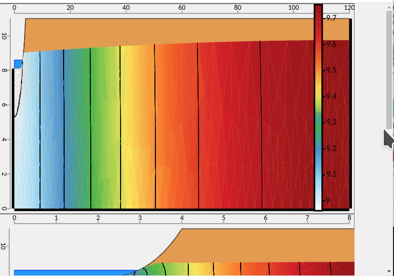
-
a global view: showing the total system from the water divide on the left to the water divide
-
a local view: showing the system near the open water on the left
-
a number view: interesting input and output numbers are combined in a table.
Moreover iGrOw uses seven graphical menus as interface.
Install
Extract all the files of iGrOwx.y.zip into one folder. The content of that folder should be as in the following figure:

-
iGrOw.html: the application itself. It is a file of the type html which can be opened by browsers
-
iGrOw_scripts: folder containing javascript sources to be used by iGrOw.html. Only if one is interested in the code one should open this folder.
-
iGrOw_csvinput: folder containing helping examples for uploading cases. The uses of the files in this folder will be explained later.
-
iGrOw_Help.html: a (short) help file in the html format (can be opened by browsers) explaining the use of the application iGrOw.html, this is what you are reading now.
-
iGrOw_Help: folder containing images used in iGrOw_Help.html.
Opening the html
Both files iGrOw_Help.html and iGrOw.html can be opened with almost all browsers. You succeeded opening the first one, otherwise you would not be reading this.
Opening iGrOw.html shows a screen as in the following figure:
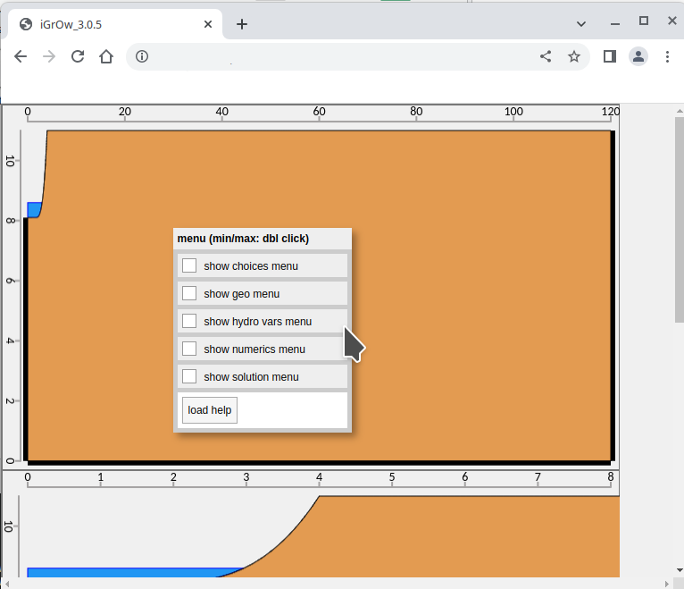It may be useful (certainly for first use) to open this help in a second tab. This can be done manually or by clicking the "load help" in the first menu that pops up, as shown in the following figure:
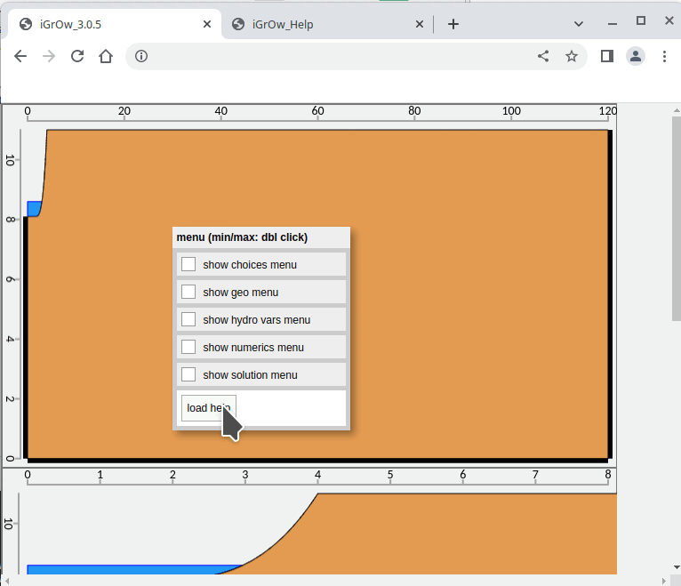Text printed in a blue font contains a link. Clicking on it moves to the place in the help document linked to. By this, clicking in the table of contents allow the user to quickly find help on the wanted topic.
The most minimal example
The following figure shows something as the most minimal example of using iGrOw:
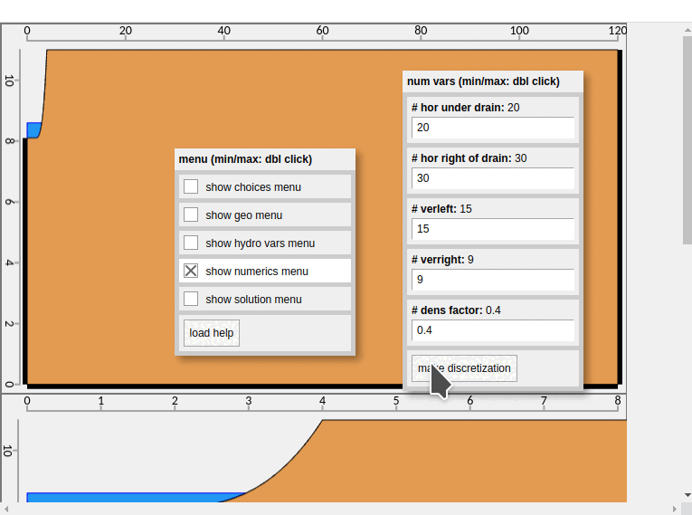- check the show numeric menu box
- click the make discretization button
- click the solve button
- check the fill cells with H box
Resizing the browser window
The size of the graphs presented adjust them self to the size of the browser window. If one does change the size of the browser window one can force this adjustment by hitting the "reload" button (may differ between browsers) as in the following figure:
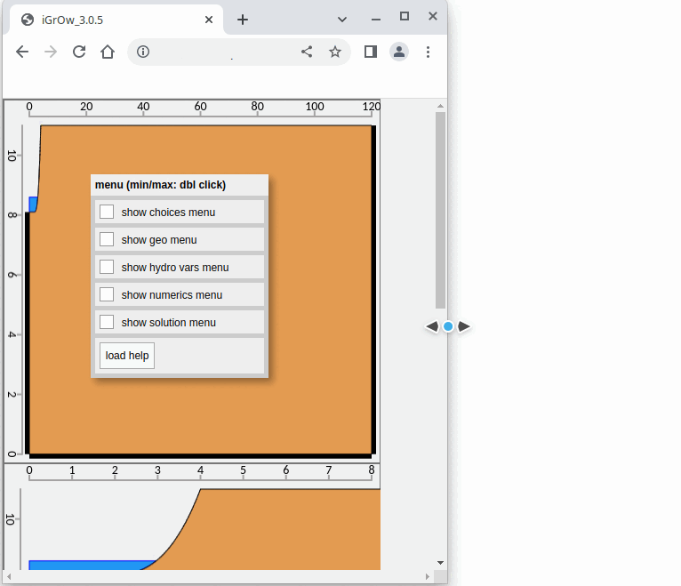Reloading the "iGrOw.html" however undoes all settings and calculations.
The general menu
The interface of iGrOW is strongly interactive. Several menus make this possible.
The opening screen of iGrOw shows one general menu, listing the other menus available. Clicking on a checkbox opens the chosen submenu. Unchecking it removes it from the screen. All menus can be dragged to an arbitrary position.

In what follows these submenus will be discussed in more detail.
The model choices menu
The "model choices" menu is used to make some fundamental choices (rather than setting parameter values).
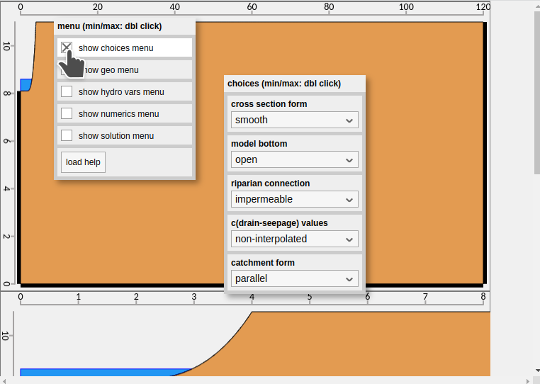The five choices are discussed in what follows.
Cross section form menu
By opening the dropdown menu of the cross section form, iGrOW allows the user to choose between two forms of cross section:
- a smooth cross section form
- a trapezoidal cross section form
Both cross section forms are determined by 1 parameter: the top angle for the smooth form, the talud ratio of the hypotenuse in the trapezoidal case. These parameters will be further discussed in geometrical settings section.
The model bottom
The bottom of an iGrOw model can either be:
- closed, i.e. impermeable
- open: allowing fluxes through the bottom connecting the iGrOW model with a (non depicted) layer below. The parameters determining this connection are given in the hydro-vars-menu and discussed there in this section.
The riparian connection
The choices of the riparian connection determine how the groundwater flows through the wall of the drain above the water level in that drain. There are three choices:
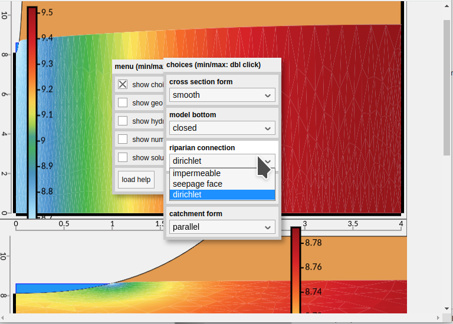1 Dirichlet
When this option is chosen, the groundwater head is forced to join the water level (a Dirichlet type of boundary condition). So in the figure below, the ground water head at the node pointed to by the mouse is forced to be equal to the open water head, avoiding by this alle connection over the (dry) wall of the drain.
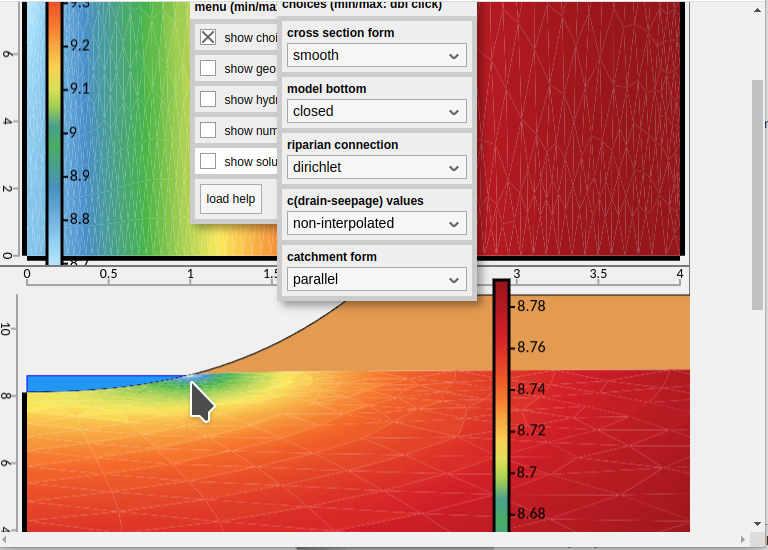2 Impermeable
When this option is chosen, the groundwater table is allowed to to freely choose its position in space (still stratifying the equations). In doing so, the groundwater table may touch the wall of the drain above the open water level, as also illustrated by the figure below. However, no water is allowed to leak through this contact zone (but recharge is allowed to enter), as also illustrated by the inspection node report also shown in the figure 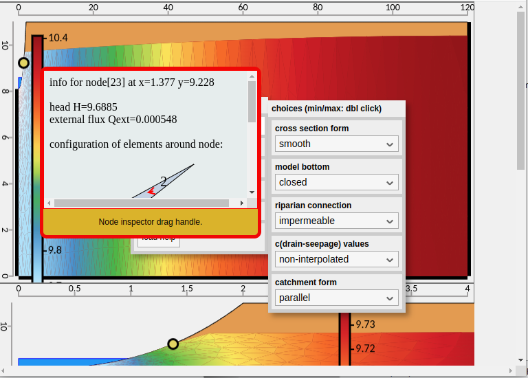
3 Seepage face
With this option, the groundwater table is again allowed to to freely choose its position in space (still stratifying the equations). But there where the groundwater touches the wall, water seeps through with a resistance given by the c seepage parameter. The figure below illustrates such a case. The total amount of seepage through the inspection node is visible as the negative number Qext in the report.
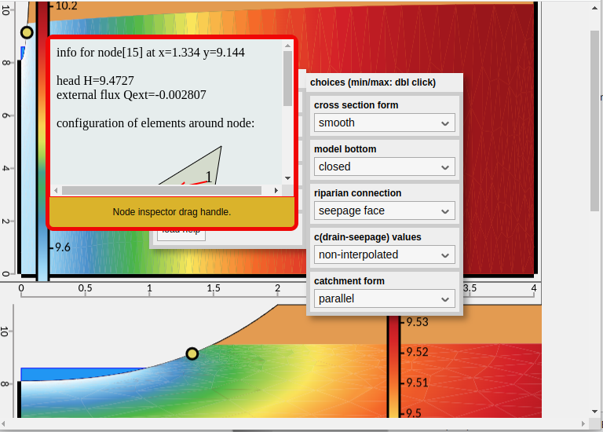(Non) interpolation of c drain and c seepage
The fourth option controls the way the resistance in the drain below the surface water is calculated.
Non-interpolated
When the option non-interpolated is chosen, only the c drain parameter is used to calculate the flux through the bottom of the slope, as e.g. at the mouse point in the figure below:

Height interpolated
When the option height interpolated is chosen, the effective resistance at a point as indicated by the mouse in the figure below is calculated as interpolated between c drain and c seepage parameters.
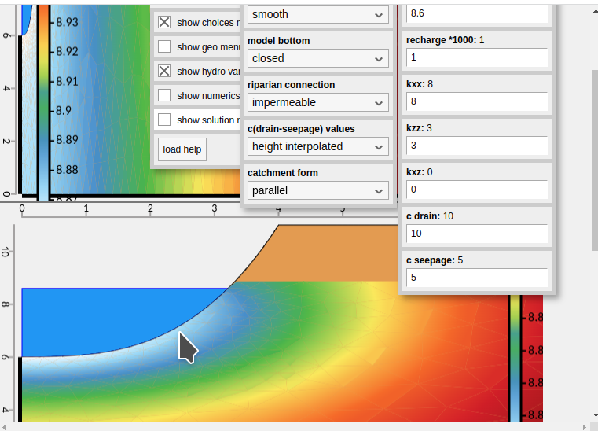This interpolation is just linear as illustrated by the following figure:
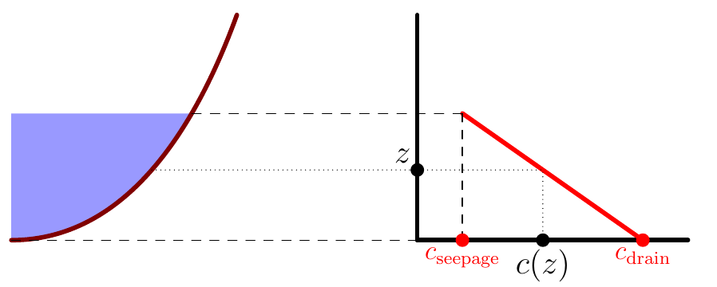Catchment form
iGrOw models the flow in a vertical plane orthogonal to the drain. This option makes assumptions on the direction orthogonal to that plane.
- the option parallel assumes that what iGrOw calculates is (in first order) representative for straight lines orthogonal to the iGrOw plane
- the options divergent and convergent assume that what iGrOw calculates is (in first order) representative for circles orthogonal to the iGrOw plane, respectively with center in the middle of the drain, i.e. at the left end of the domain or at the right end of the domain . The parameter determining the non-parallel choices is called catchment curvature and is discussed in the geomenu.
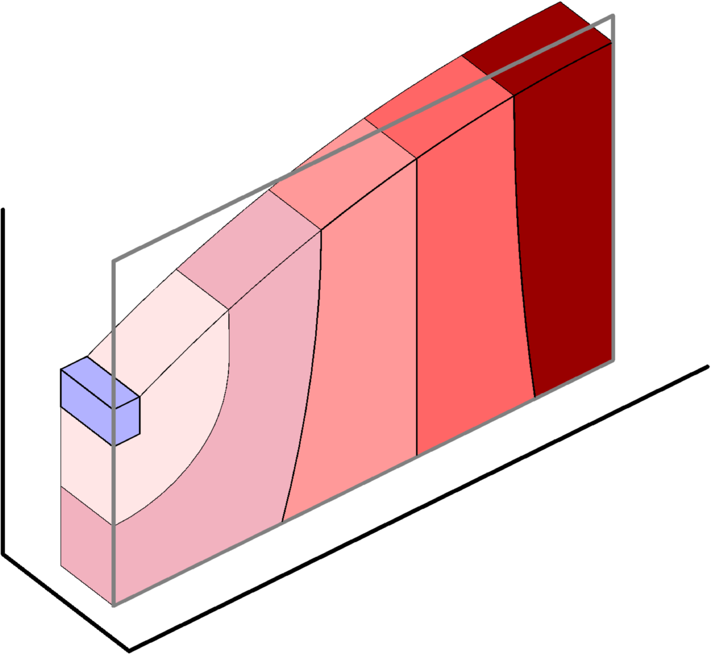 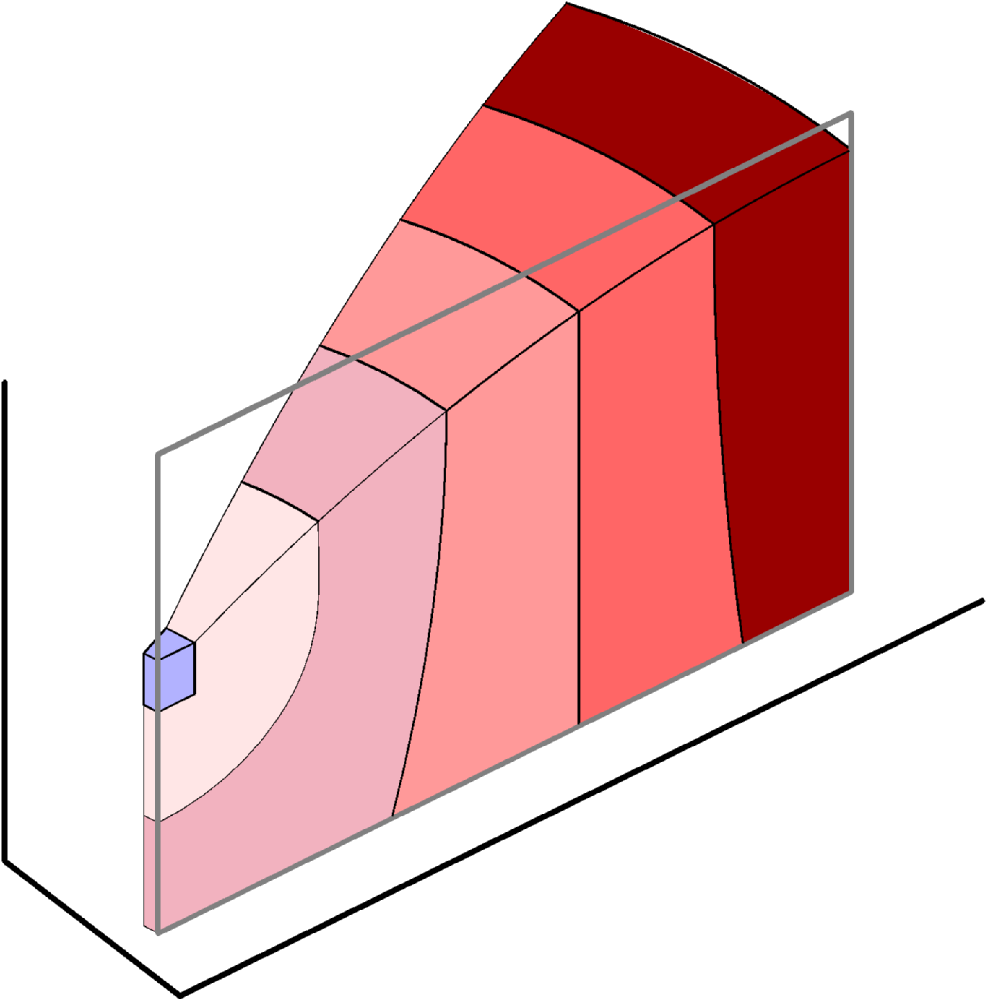 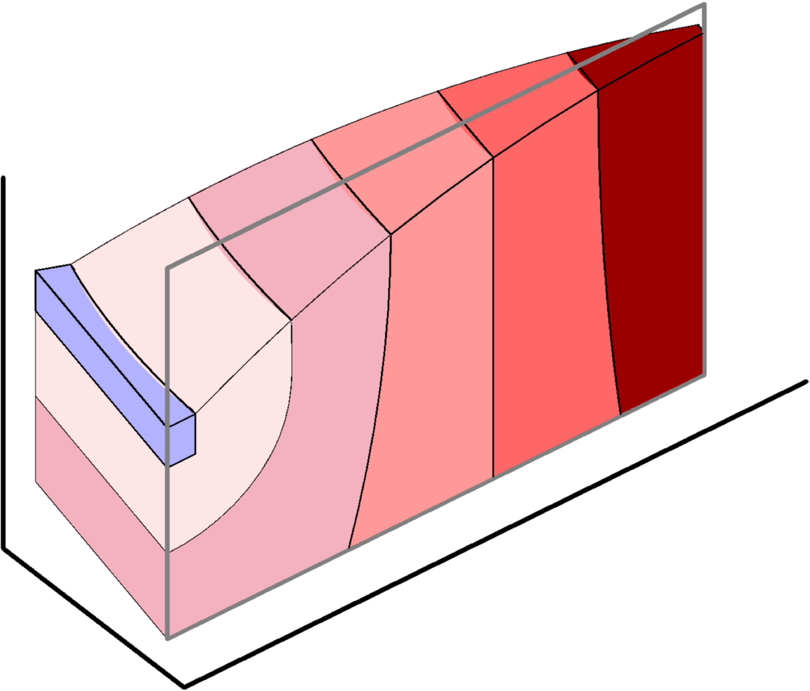
Entering parameters
An iGrOw model is dertermined by (rather small) number of parameters. The user can choose values for these parameters using the menus, which will be discussed in the following sections.
In some browsers, values in these menus can be changed using small arrows at the right of the parameter field or using the up and down arrow keys. Using these techniques will change the value of the parameter gradually.
In many case the user may want to just to enter a specific number for the parameter. Suppose for instance the user wants the change the width of the iGrOw domain from 120 to 105. The most standard way of doing this is by looking upon the cell in the menu as a "mini"-editor: first removing the 0 and 2 and then entering the 0 and 5. In doing so the content of the cell becomes 12, 1, 10 and finally 105. It is certainly not the intention of the user to make iGrOW accept these intermediate values 12, 1 and 10 and process them by updating the screen and/or other calculations. For that reason iGrOw only accept the current cell value only as final if the enter/return key is hit. Intermediate non-final values are signaled to the user by a green color.
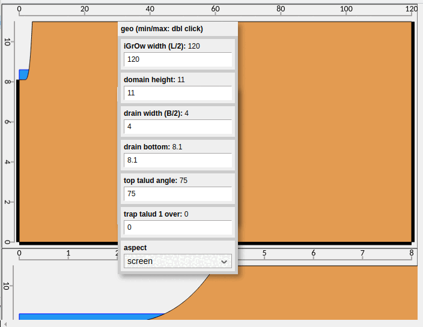
A similar approach to oppose committing values until the enter/return key is hit is used for several values grouped in order to let the group satisfy relation between parameters, as will be discussed in a following section.
This delay in passing on parameters from the menu to iGrOw is not needed for the numerical parameters, as by construction they are only passed on collectively if the "make discretization" button is hit.
The geometrical settings
The numerical fields in the geomenu can be freely edited without any reaction of iGrOW. Only when the return/enter button is hit these numbers are passed on to iGrOw allowing it comes into action by controlling whether they satisfy the constraints and if passed by redrawing the screen.
The geomenu
The geomenu collects all the settings of parameters that have a pure geometrical meaning.
In principle the user can choose any unit for these parameters (as long as it is done consistently), but in all the examples that follow it is assumed that the values are given in [m].
Opening the "geo"-menu is done by checking the first box of the main menu. Unchecking it removes this menu from the window. When checked, a new menu (that can also be dragged, minimized and maximized) appears in the window showing the geometrical variables whose values can be changed through this menu, as is shown in the following figure:
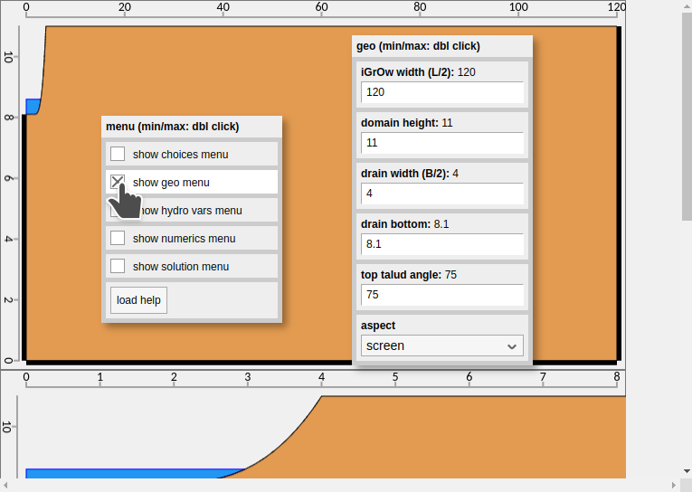Depending on model choices made new or other fields may appear in this menu, as will be discussed in
The dimensions of the model
The following figure clarifies the meaning of the four first values in this menu who determine the dimensions of the model:
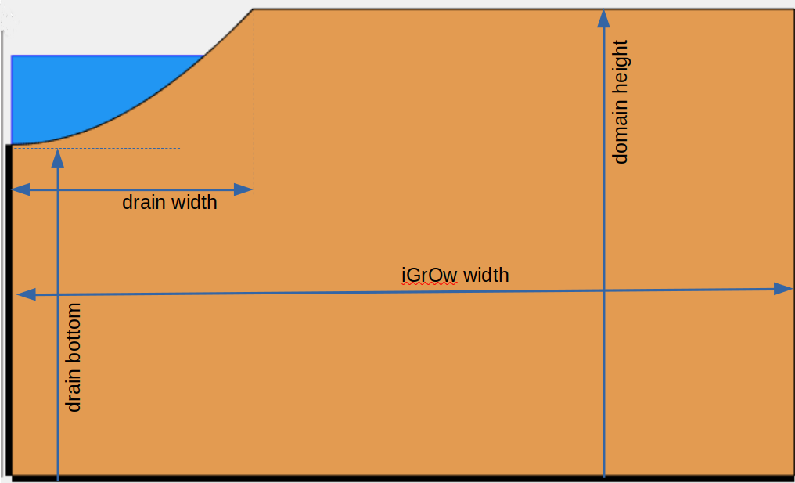These values are:
- domain width (L/2): the width of vertical model section; the (L/2) is added to remind the user of the classical view that on the right hand side of the water divide one can think of a mirror image of the one modeled here in the window (with a drain on the far right), so that in that way the "whole" model has a width of L.
- drain width (B/2): the width is measured to the top of the drain, so it measures the "dry" width; the (B/2) suggests a mirror drain to the right of the left water divide
- domain height: measured with respect to the bottom of the model, which is assumed to have height 0
- drain bottom: height of the bottom of the drain with respect of the bottom of the model.
Changing a value in this geo-menu has an immediate effect on all plots in the window as can be seen in the following picture:
All these values have preset minimum and maximum values (set in the script "iGrOwmenu.js"). There are also relations between the settings that need to be satisfied. For instance, the drain bottom should never be higher than the domain height. The user is warned if he nevertheless tries to do this. So if one wants to lower the domain height and the drain bottom in such a way that the new domain height is below the current drain bottom, one should first lower the drain bottom to avoid this type of conflicts.
The cross section parameters
Smooth cross section
If the "smooth" option is chosen in model choices menu for the cross section form, the cross section of the drain is a smooth curve determined by three parameters: bottom depth below surface, drain width and top talud angle, as illustrated in the following figure:

The entry for the _top talud angle_ appears in the geomenu if the _"smooth"_ option is chosen in model choices menu for the [cross section form](#crosssection).
Technically, the smooth curve of the drain bottom is determined by a cubic spline:
uniquely defined by:
- a point on the drain bottom, left of which we assume
- on that point we impose and
- at the point we impose and , the given slope of the talud. For numerical reasons, the maximal slope is set to 89.
The following figure shows 3 of such splines.
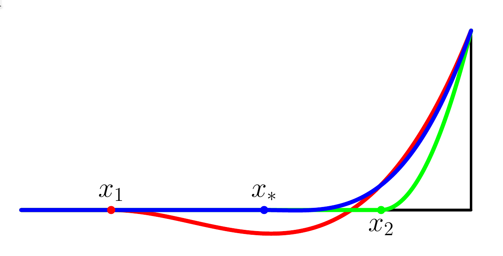
The figure above shows that if we choose too far to the left, the resulting spline takes values below the drain bottom, which is unwanted. For values at the right, as e.g. this is no longer the case. iGroW chooses the smallest value for which the spline does not give values below the drain bottom.
Trapezoidal cross section
If the "trapezoidal" option is chosen in model choices menu for the cross section form, the cross section of the drain has a simple trapezoidal form determined by three parameters: bottom depth below surface D, drain width and talud slope , as illustrated in the following figure:
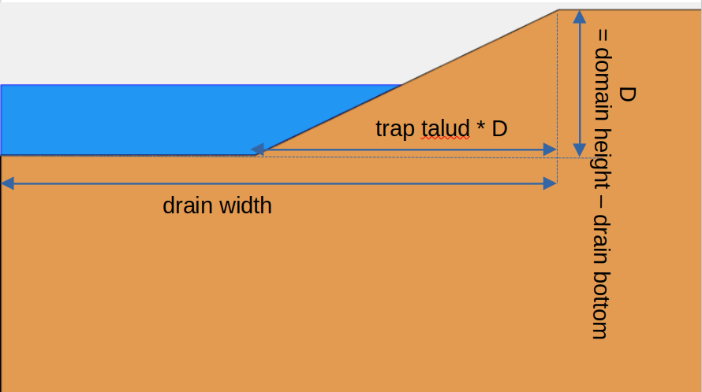The entry for the trap talud appears in the geomenu if the "trapezoidal" option is chosen in model choices menu for the cross section form. Choosing a value of 0 for this parameter (the default) results in a rectangular cross section form.
Catchment curvature
For a parallel the width of the catchment draining is considered to be constant .
If one chooses a convergent (towards the drain) or a divergent (towards to the drain), this width is changing linearly with the distance to the drain:
- convergent:
- divergent:
The parameter is called the curvature of the catchment.
In the divergent case, there is the condition on the curvature:
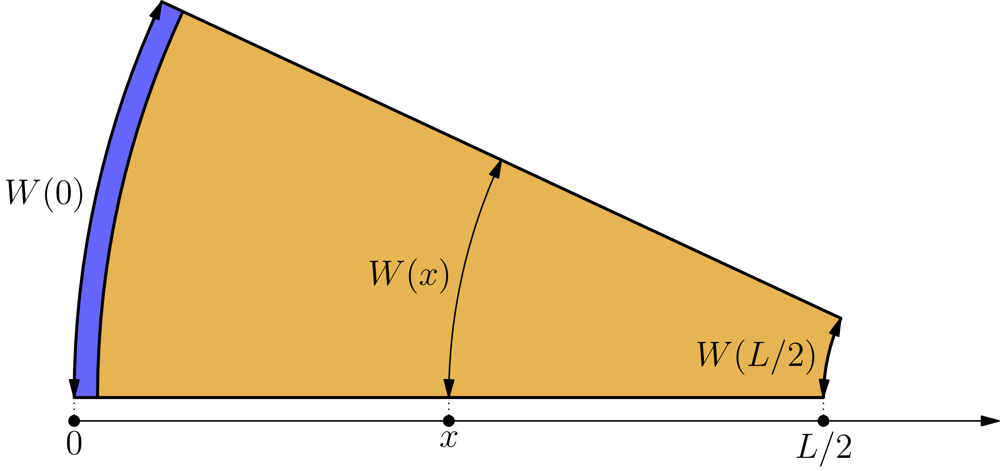 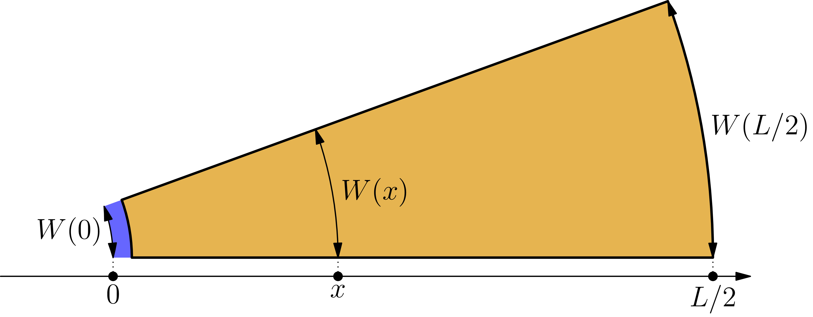
If (and only if) if the choices for convergent or divergent, an entry for this curvature value appears in the geomenu, as illustrated by the following figure:
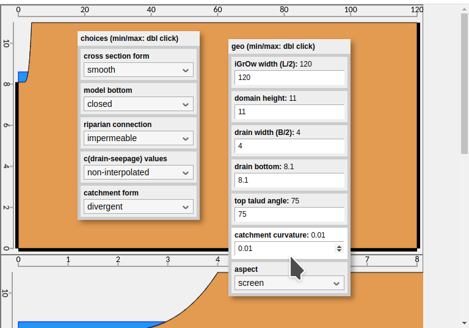The aspect of the plots
The graphs shown have different x-axis and y-axis scales, chosen such as to fill the available space in the screen window. In the menu, this is called the "screen" aspect. Plotting under this aspect does not preserve curvatures, angles and orthogonality. By choosing the "physical" aspect an x over y = 1 aspect is used for plotting. The difference between screen and the physical aspect is illustrated in the figure below:
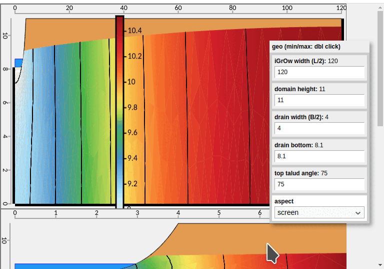In the screen view the contour lines appear as almost vertical, in the physical view there clearly appear to be tilted. The physical view is added to iGrOW to make the user conscious of this. But the screen makes all kind of details more visible, and is therefor chosen as the default.
The physical parameters in the hydro-vars-menu
The physical parameters are set in the hydro vars menu.
The numerical fields in this menu can be freely edited without any reaction of iGrOW.
Only when the return/enter button is hit these numbers are passed on to iGrOw allowing it comes into action by controlling whether they satisfy the constraints and if passed by redrawing the screen.
The following figure shows this menu:

This menu may vary in length:
-
the resistance parameter and c_seepage will only be included in the menu if the model choice option c(drain-seepage) values height interpolated and/or the seepage face was selected.
-
the parameters c base and H base are only included in the menu if for the model bottom the option open is selected.
The precise role of the parameters is further explained in the equations section.
The parameters in this menu also involve time. In principle the user can choose any time unit, but in all examples that follow this time unit is [day]. When also the standard choice of [m] for length is made, the parameters have the following dimensions:
- drain level , H base: [m]
- recharge, kxx,kxz,kzz: [m/day]
- c drain, c seepage, c base: [1/day]
Changing the drain level gives immediate changes in the graphs. Changes of the other values will only become visible through their effects on the solution. Note that the recharge input value will be divided by 1000 when used in the calculations (so that with the choice of [m] for length en [day] for time, the unit of this field is [mm/day]).
Constraints on the parameters
Non feasible parameter values
Not all values of parameters result in feasible models. For instance, the drain level should always be above the drain bottom. The menu's however allow to change parameter values into non-feasible models. iGrOw informs the user of this non-feasibility and refuses to continue until all parameters are feasible.
The following image shows such a setting: a drain bottom of 8.1 is increased to 11 (and the enter/return button was hit passing this number on to iGrOw) This puts the bottom at the domain height and above the drain water level, both making it impossible for iGrOw to continue. iGrOw signals this to the user by a window, allowing the user the choice to accept this change or not. If accepting the set values, the parameters involved in the non-feasibility are colored red in the menu's. After changing the domain height into 12 and the drain level into 11.4, the parameter setting is feasible for iGrOW and the red warning colors disappear.
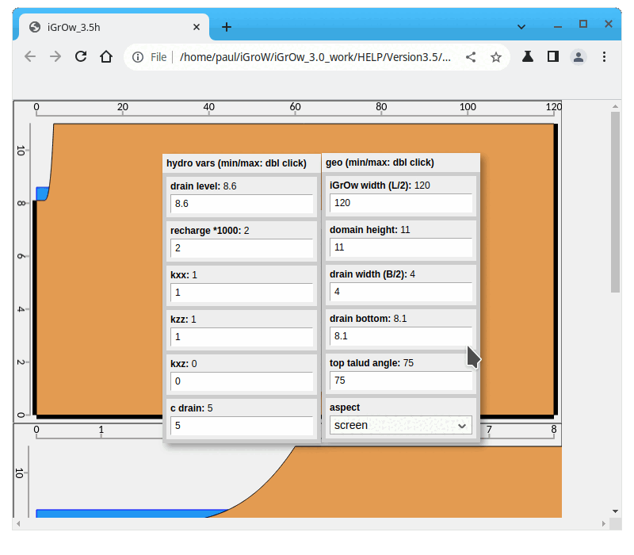A better way of changing many values in iGrOw (avoiding error messages) is to postpone hitting the enter/return key until all the relevant parameters have received they proper value, as in the following figure (see also section):
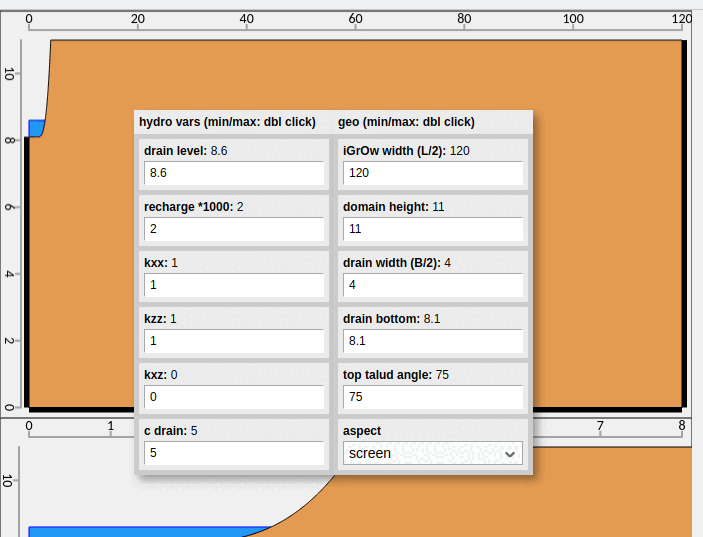A non-feasible parameter value can also be the result of a typing error, as in the following figure where the drain bottom is accidentally increased to 118.1. In that case the user can not accept this setting. iGrOw reacts to this choice by allowing the user to reset the parameter values to the last feasible ones.
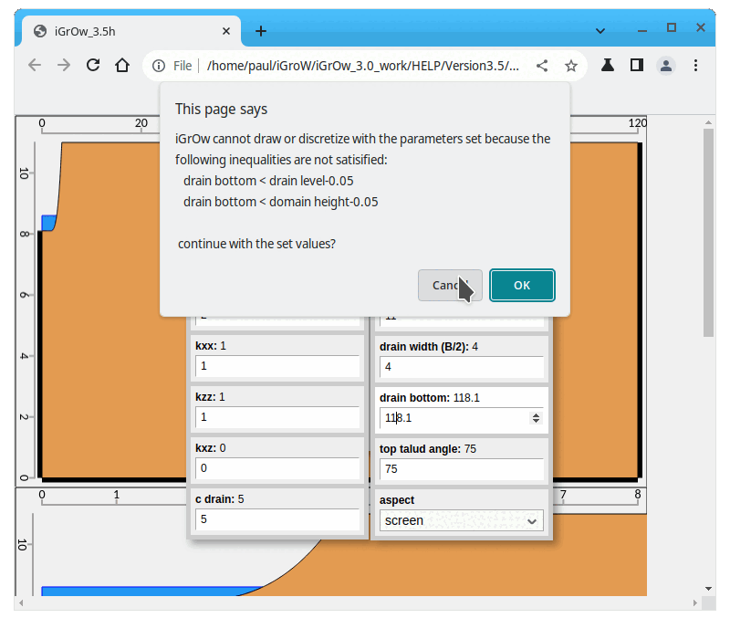Parameter constraints in iGrOw
In order to be feasible, the parameters should satisfy the following constraints:
- geo.drainwidth <= 0.9 *geo.domainwidth
the 0.05 is needed as iGrOw wants to put nodes to the right of the drain - solution.CELLwidth >= geo.drainwidth
- geo.drainbottom > 0.1 * geo.domainheight;
the 0.05 is needed as iGrOw wants to put nodes underneath drain bottom - physics.drainlevel >= geo.drainbottom+ 0.05
iGrOw assumes a minimal water level of 0.05 in the drain - physics.drainlevel <= geo.domainheight -0.05
- geo.drainwidth - geo.traptalud * (geo.domainheight - geo.drainbottom) >= 0
see the section on trapezoidal form - geo.curvature < geo.domainwidth
only relevant if for the catchment form convergentwas chosen - the conductivity matrix (see also the section on the equations) should only have positive eigenvalues
- physics.cseepage <= physics.cdrain
only relevant if the option height interpolated and/or the option seepage face was chosen
The flow equations
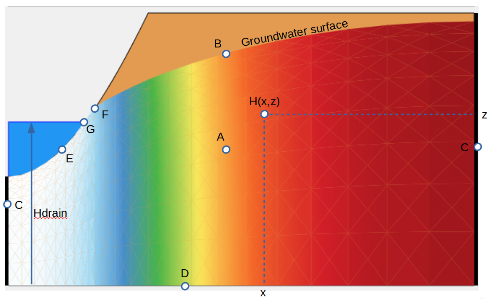
The problem to solve is to calculate for each point below the groundwater surface the groundwater head . In the figure above the variation of is indicated by colors.
Calculating the position of the groundwater surface is part of the problem to be solved. The groundwater surface consists of the points for which the following equation holds:
The flux is calculated by:
were is the width of the catchment as discussed in the catchment curvature section.
The mass balance equation is in each point given by:
The external flux has different expressions on different parts of the domain:
-
in a point in the interior of the domain no external flux is present:
-
in a point on the groundwater surface, the external flux is given by the recharge intensity :
-
the left and right boundaries are considered as water divides, so no water enters or leaves the system there so that for a point :
-
At a point on the lower boundary, two choices are possible:
- when model bottom is closed, the flux is just zero:
- is the model bottom is chosen to be open the system is contact with a lower groundwater layer called base layer with a constant head . For any point on this lower boundary the flux is then given by:
where is the resistance of the exchange
-
at points as where the system is contact with the water in the drain, so below the water level in the drain, (with constant head = drain_level, the flux is calculated by:
for see the section on outflow resistance
-
at points as on the wall of the drain above the water level, the flux is given by:
- if the option seepage face is chosen:
- if the option seepage face) is not selected:
- if the option dirichlet is chosen, a fixed head boundary condition is chosen:
and no balance equation is solved
The numerical settings
The numeric menu
As the equations can not be solved analytically, a numerical solution will be calculated. The first step in this procedure is make a discretization of space. A finite number of nodes will be placed in the domain, and only in these nodes an approximation to the 's will be calculated. This (initial) discretization is done in the numerical menu with the help of the parameters in that menu, as illustrated in the following figure:
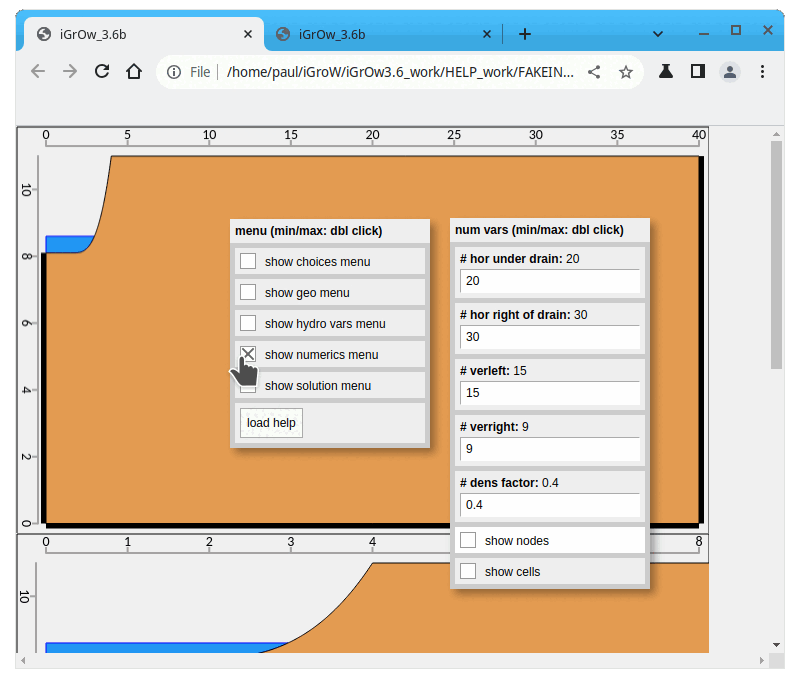The role of these parameters is illustrated in the following figure:
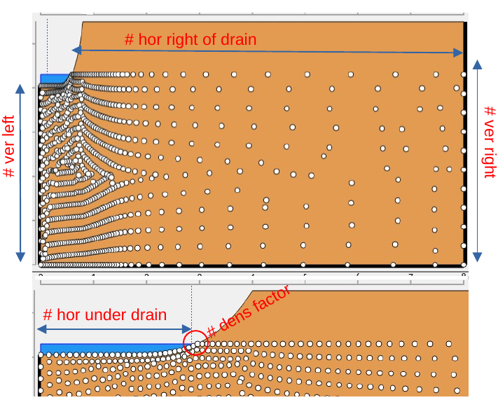
As the solution will show dramatically different variations throughout the solution domain, with very horizontal flow on the right and with strongly curved flow near the bottom of the drain, the number of nodes left and right can be independently chosen.
A critical point is the rightmost point of the drain. A # dens factor greater then 0 (maximum value is 1) makes the distribution of the nodes around that point denser.
The nodes shown in the figures above are the initial nodes. During the solution procedure they will shift position in order to capture the positions with groundwater present.
Discretization cells
The approximation of the heads will be calculated at and only at the discretization nodes. These heads are the solution of balances constructed at these nodes by a classical Finite Element technique.
Finite Element technique requires the nodes to be connected by triangles. iGrOw uses the classical Delauney technique for this. Hitting the make discretization button also calls this method for the constructed nodes. The result of this can be seen by checking the show cells button in the numerical menu:
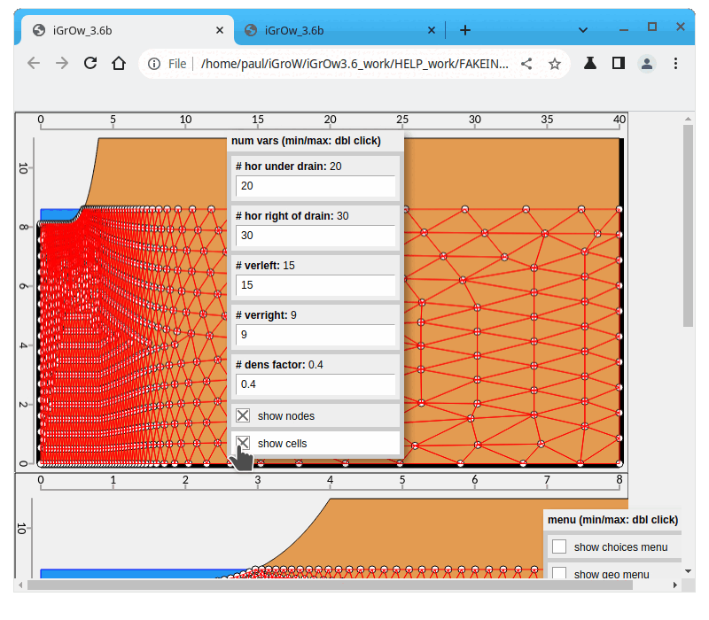One usually tries to make the triangles for Finite Elements as equilateral as possible. For the problems iGrOW is tackling, this given the x-z ratio not possible. To appreciate a generated triangularization, one should not forget to take also a view in the physical aspect ratio as in the following picture:
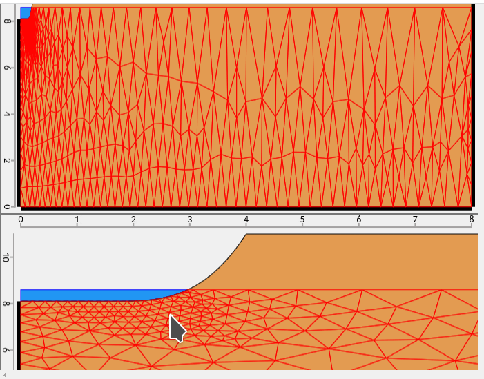
Calculation of the numerical solution and adaptation of the nodes
Once a discretization made, a numerical solution can be calculated. As the differential equations (see above) are essentially balance equations, the solving procedure tries iteratively to find head values in the nodes () such that the numerical mass balances for each node the numerical mass balance error is minimized. The node inspector option of the solution menu gives a (local) view upon results of such a balance.
But iGrOw not only has find the location of the ground water table. This requires a second iteration, during which the position of the nodes (and cells) is adapted to better fit this ground water table. If the option seepage face is chosen, nodes also move along the wall of the drain in order to optimal locate this seepage face. The figure also shows that in iGrOw nodes can never rise above the domain height.
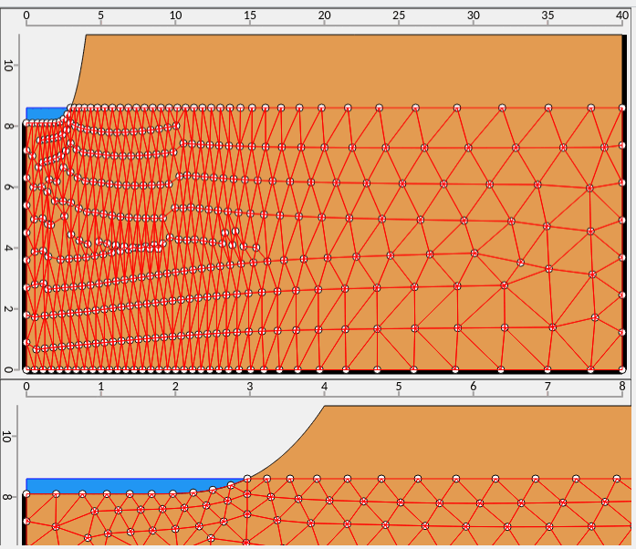
Solving and solution menu
After a discretization is made, one can calculate a numerical solution. To do this, open the solution-menu and hit the solve button:
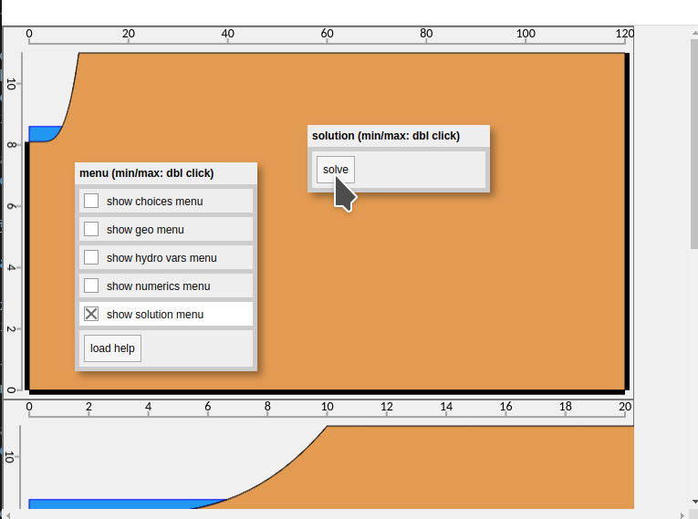Once a solution is calculated, new options appear in the solution-menu, as shown in the figure below: 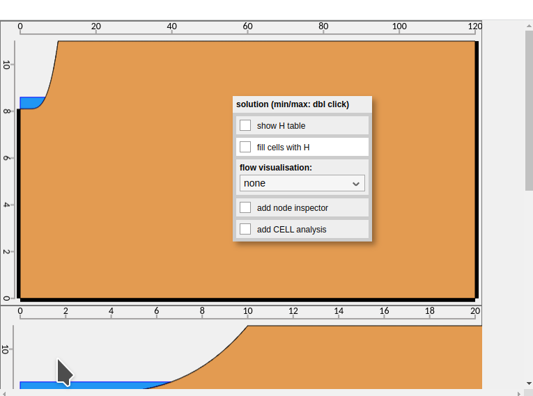
Water table
Checking the "show H table" box shows the water table, that is the surface for which in the groundwater and head just below the drain bottom as shown in the figure below:
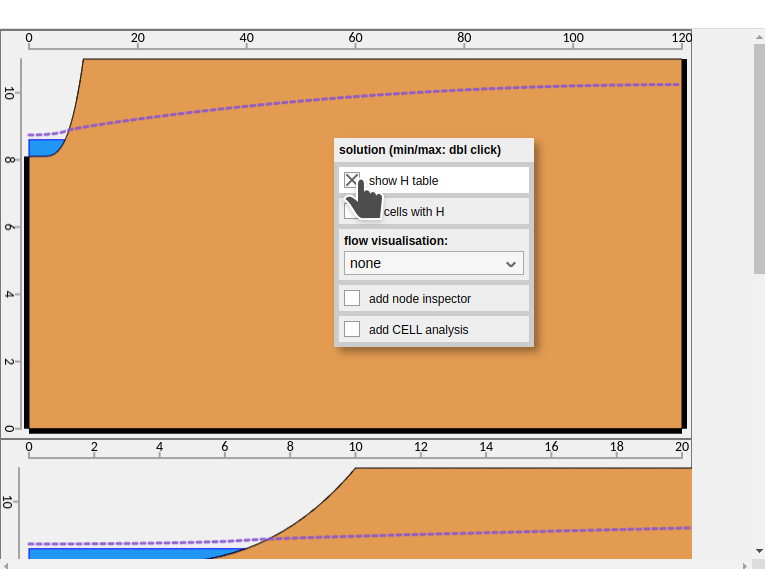H fills
Checking this box fills the flow domain with colors representing the values of the 's. A color bar with an axis (which can be dragged to any place in the window) gives the relation between values and colors.
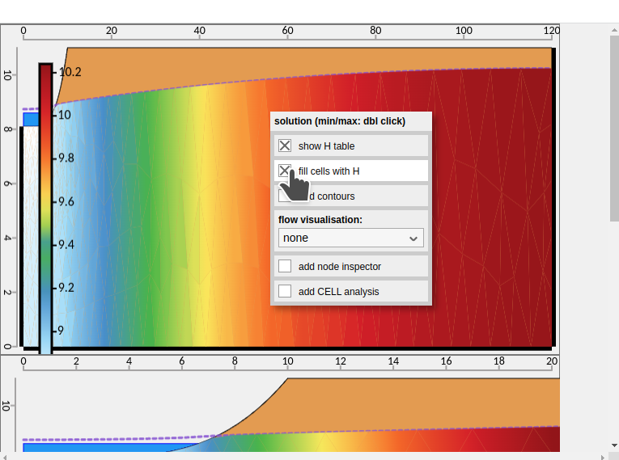Both the top (global) view and the second (local) view are filled. The same colors are used but the relation between colors and values are chosen in such a way that only the values visible in the local view are used. A new color bar adjusted to this new relation is added, as shown in the figure below:
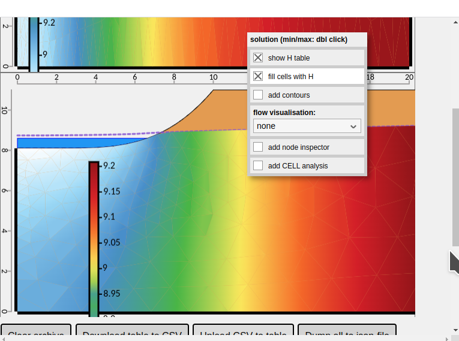Contours
If the "fill cells with H" option in the menu is checked, an extra option "add contours" appears in the menu. When checked contour lines corresponding to the values of the color bar are added to the plot as shown in the figure below:
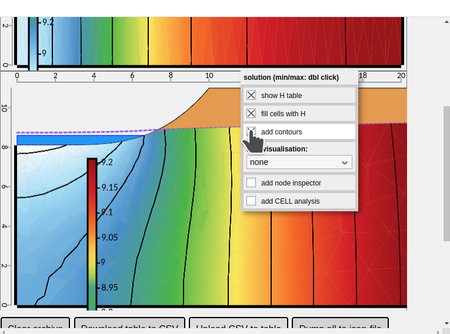Flow visualization
The flow visualization dropdown menu allows the user to choose a particular flow visualization. None is also a choice.
Flow directions
If the draw flow direction option is chosen, arrows are drawn in the whole domain, both for global and local view, indicating the direction of flow. In this the flux size is neglected resulting in arrows all of the same length. If flux size is the point of interest, one should use the "draw fluxes" options (see section).
The following picture shows such an analysis: 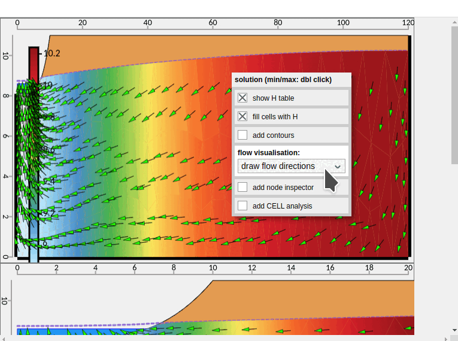
Fluxes
Checking the draw fluxes option draw fluxes both in the top global and middle local view. The user has to select a factor to map the flux vectors (who have a different physical dimension: length/time as the pure length dimensions of the axes) onto the plot. The length of the arrows is proportional to the flux. All arrow head have the same head size. When the don't draw small arrows box is checked (default), arrows whose length is invisible below the head are not drawn. Increasing the arrow factor makes then that more fluxes appear. When unchecked, fluxes are drawn in the total domain, even if they are invisible beneath the arrowhead. Note that the same arrows are drawn in the top global and middle local view.
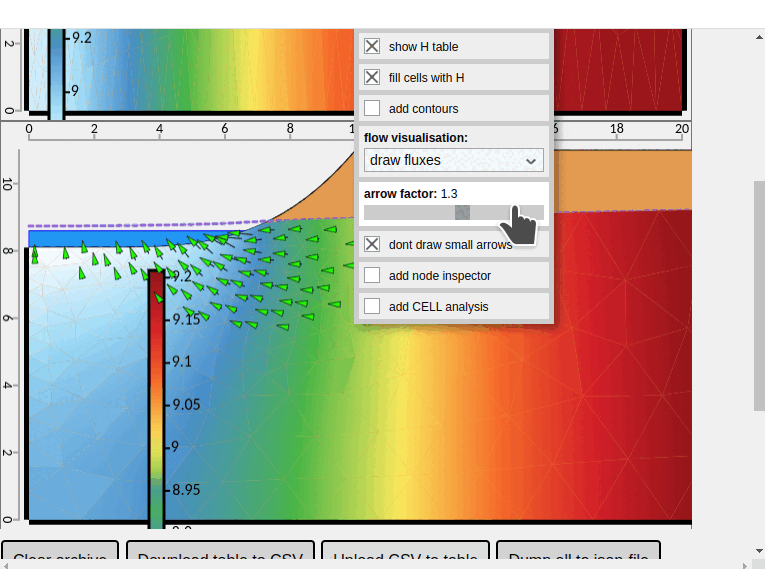If one is only interested in the direction of the flux, and not its size, one should use the "draw flow directions" options as discussed in this section.
Node inspector
The option "add node inspector" allows the user to inspect the information assembled in a node. When checked, a yellow circle with a black line around it appears in both views. It can be dragged to any place in the domain. By dragging the pointer circle in one view, the circle in the other view will follow. Of course, by dragging the pointer in the global view to the far right can make the pointer in the middle local view invisible. When released after dragging, the pointer will automatically move to the nearest node. A small report of all information connected to that node appears, as can be seen in the following figure: 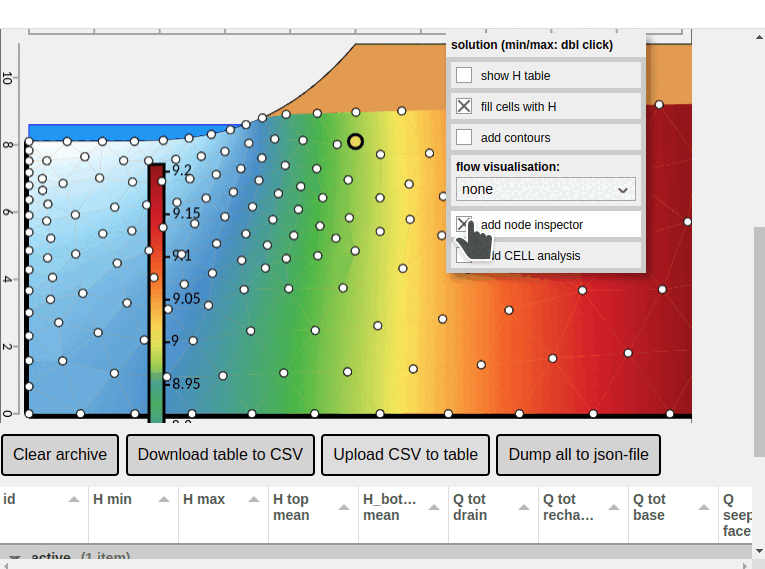
That report can be dragged to any place in the window. It contains the following information:
- position of the node
- value of
- external flux (non-zero values only possible on the boundaries)
- a graphical representation of the configuration of the cells around the chosen node, with in each cell the calculated flux vector
- a table with the numerical values of these internal fluxes
Cell analysis
If the "add analysis" box is checked, a section on the left of the domain is analyzed as if it was a cell of a numerical model (as e.g. MODFLOW).The width of this cell can be chosen by the new menu item that appears. The right border of this cell is plotted as a yellow line. The results of the analysis are shown in a small report (that can be dragged to any place in the window) as in the following figure:
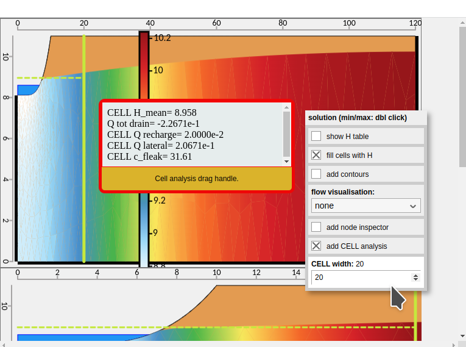This report contains the following information:
-
Cell H_mean: the mean value of the top nodes in the cell
-
Q tot drain: the total flux to the drain
-
Cell Q recharge: that part of the recharge that falls on the cell
-
Cell Q lateral: the flux over the right border of the cell
-
c_fleak: calculated by:
This value is chosen such that if one calculates the flux to the drain with a constant head and this resistance this would result in the modelled flux to the drain:
Note that the value of c_fleak is only representative for the current parameter values. If the relation between and is very non-linear as in the figure above, the linear relation determined by only the current parameter values (red line) can be a poor approximation. 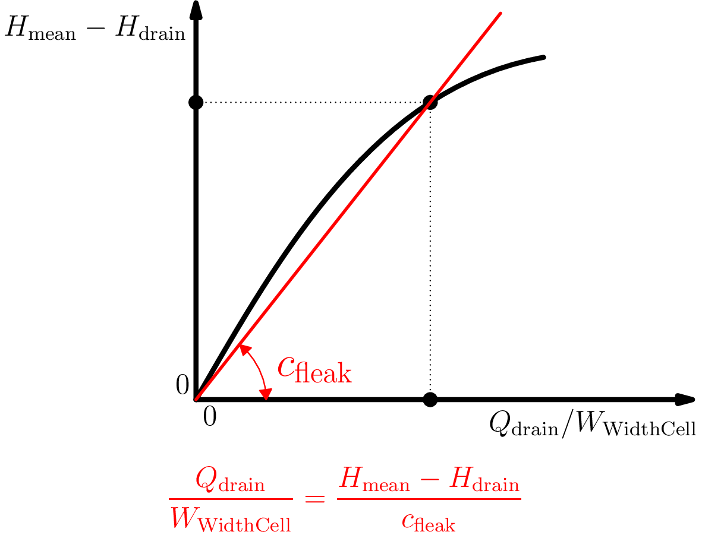
When the lower boundary is open the report is extended as in the following figure:
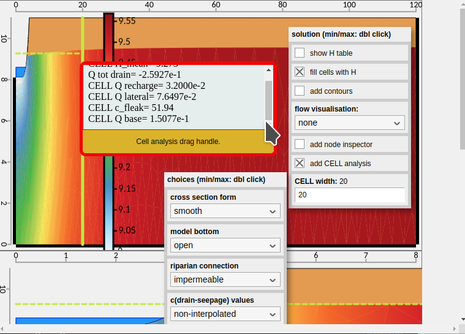The extra value in this report is:
- Cell Q base: the total flux over the lower boundary of the cell into the cell
Using the table
Active storage
The lowest part of the window shows a table-view in terms of numbers of the model under consideration. Both input numbers and result numbers are stored in this table. Any change in these numbers of the current model is immediately stored in the top line of the table, called the "active storage" as shown in the following figure:
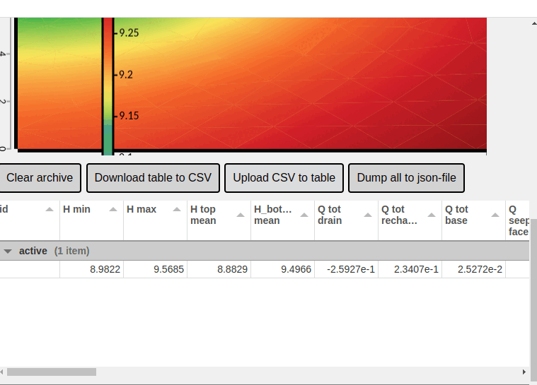The table is (usually) much wider than the browser window. One should use the horizontal scroll bar to view all the variables. Name of the variables are as introduced above, input variables have the same name as in the menus. Variables that do not receive a value in the current model (e.g. because there is no base layer or no cell analysis is done) get the value "NaN" (not a number).
Table variables and wetted perimeter
Most of the entries in the table are are self explanatory (or input variables already introduced in the discussion of the menus):
- H min, H max, ... : minimal and maximal head values occurring the model
- Q tot drain, Q tot base, ...:
There are two fields in the table that have not been introduced yet: the wetted perimeter.
The three "perimeter" entries are defined in the following figure:
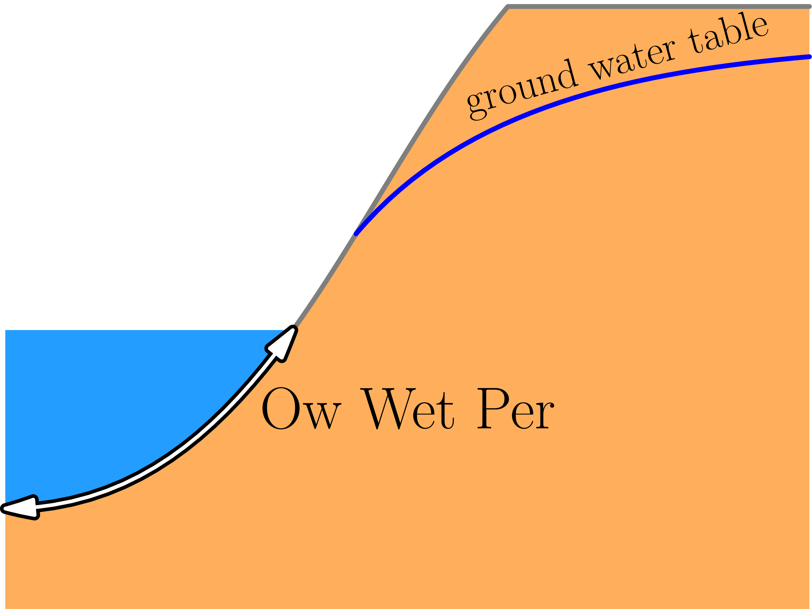 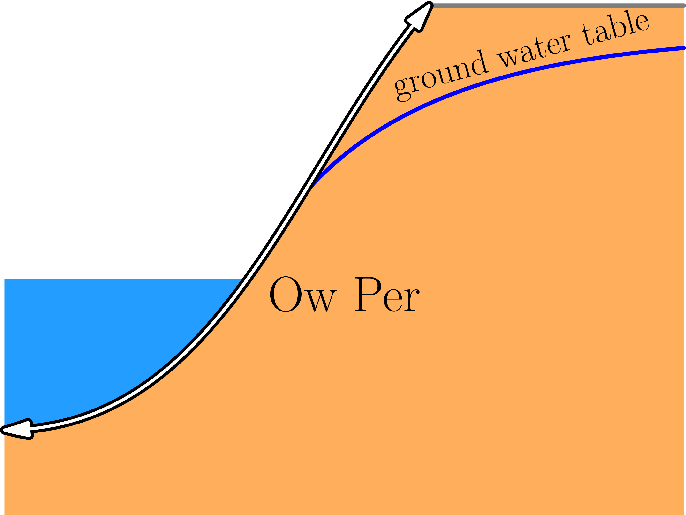
One of the fields, the comment field at the far right, is not entered by the iGrOw model but is left to the user. When the user clicks with the right mouse button on the active line field in table, a small menu appears. When clicked on the edit comment in this menu, a comment can be entered that is stored in the table, as shown in the following figure:
Archiving in the tabel
Often one wants to compare to (or more) model runs. For this the table can also be used. By clicking with the right mouse button on the active row, the user has the option to archive the active row. If the user accepts this, the now active row is copied in another part of the table called "archive". Changing the model parameters and rerun the model results in another active row. The results of this active row can then be compared to the archived one.
The following figure illustrates this:
In the example above the "first run" was saved in the archive, the comment of the active row was changed into "second run", the value for H base was changed into 9.0 and the model was rerun.
Clicking the Clear archive above the table empties the archive.
Activating archived row
Changing model parameters, running the model, archiving the results end in general in a table with several rows. One can of course compare the output numbers of the different results as stored in the table. But it may also be the case that one wants to review the plots corresponding to an archived row. This can be done by clicking with the right mouse button on an archived row. The user has then the option to accept that this archived row becomes active, including all the graphical plots.
The following figure illustrates this:
Download table to CSV
After collecting a lot of runs in the table archive, one may wish to continue the analysis outside iGrOw.html, for instance in a spreadsheet. For this, one can hit the button "Download table to csv". A csv file containing all the rows and columns of the table will then be saved on your computer. Most browsers will save this (for security reasons) only in the local Downloads folder. Some browsers allow to change the name of that file, some give a default name.
The figure below shows such a download on a Chromium browser. The default name is then "iGrOwdata.csv" and it appears in lower part of the browser. This file can be downloaded and analyzed in any spreadsheet.
The following figure shows such an analysis. (Output data generated with the iGrOwMultiInput.csv):
Running cases/uploading from CSV
The manual discussed until now how models could be made interactively (through menus) and stored in tables. To run many cases, the interactive approach may be too cumbersome.
For that reasons, iGrOw allows also to define all these cases in a csv file and upload it in iGrOw. iGrOw will run all these cases and store them in a table.
For this procedure, one should first make a csv file with all input variables as column names and where the rows correspond to the cases. Then hitting the -"Upload CSV to table"_ and selecting an input file runs all the examples of the chosen csv:
To help the user in this, the folder "CSV" contained in the install contains some examples:
- iGrOwInputExample.csv: contains an input csv file with one run defined
- iGrOwMultiInputExample.csv: contains an input csv with several lines as input. The folder contains also the corresponding iGrOwMultiOutput.csv, generated with the Download table to CSV(#downloadtabletocsv) after all models were calculated.
- a template file that may be used as a starter for making input csv files.
As the spelling of the columns names is VERY IMPORTANT the use of this template file is advised.
There maybe fields that are not relevant. For instance if one choses a smooth crosssection, then there is no need for a value for the trap_talud field. It is advised to fill the field then with "NaN" (not a number).
As special case in these input csv files is the _CELL width" field. If it is NaN no cell analysis will be performed, if it contains the length of the CELL, cell analysis will be performed and presented in the output.
If the parameters do not satisfy the constraints, output parameters are not generated and the comment field will contain the message "not run".
Dump all to json-file
The table contains only some calculated pre-chosen values, and not all values within the model. The last button allows one to download all the values used and calculated values in a file. The format chosen is "json". This is a very general format for which most programming languages have a "reader" for this type of file:
- R: "fromJSON" in the "rjson" package
- Python: "json.load" in the "json" module
- Excel: "Select Data > Get Data > From File > From JSON"
- ...
Once read into a language proper structure, all further calculations can be done withing the chosen language.
Non-menu settings
The sections above discussed values of variables that can be interactively set through the menu options.
The iGrOw uses on start up values that can be changed if wanted. The are collected in a javascript file (which can be opened and edited by any editor) called “iGrOwdefaultsettings.js” that can be found the iGrOw-scripts folder. The following image shows the first and the last part of this file as provided in the of the installation:
......
All items but the last one have been discussed and explained above.
The "convergence" structure collects numbers that are used in the mathematics of the solution procedure, and should not normally be changed:
-
omega: classical relaxation factor used in the iterative solution of the equations. Larger numbers can result in a faster solution, but can also result in non-convergence.
-
alpha: relaxation factor used in repositioning the nodes during the solution procedure
-
baserelax: relaxation factor used in the part of the solution that handles the base flow. Larger numbers can result in a faster solution, but can also result in non-convergence.
-
maxiter1: maximum number iterations in the solutions of the main part of the equations
-
maxiter2: maximum number iterations in the solutions of base part of the equations
-
maxHchange: stop criterion for heads: if changes in H-values are smaller than this number, the iteration in the main solution procedure stops
-
maxQchange: stop criterion for fluxes: if changes in Q-values of the base values are smaller than this number, the iteration in the solution procedure that handles the base fluxes stops
-
maxdiffHY: stop criterion for the adaption of the grid.
In principle, any of these numbers in this file can be changed. If an altered file is saved in the script folder, it will be used the next time the iGrOw is (re)opened.